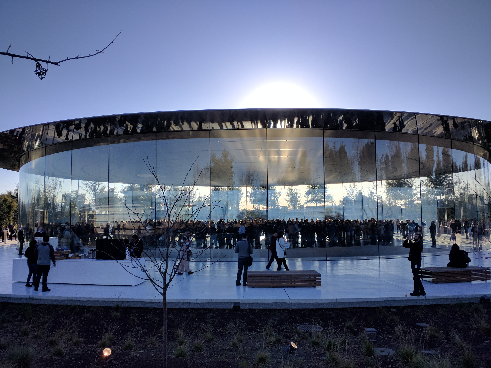
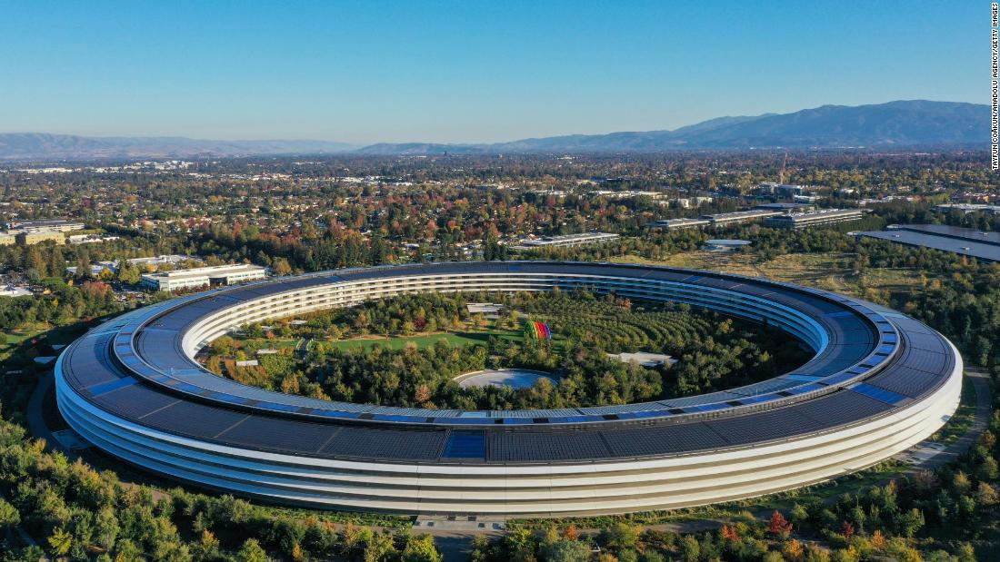

| Productos | Historia | Donde comprar |
es una empresa tecnológica estadounidense que diseña y produce equipos electrónicos, software y servicios en línea. Tiene su sede principal en el Apple Park, en Cupertino (California, Estados Unidos) y la sede europea en la ciudad de Cork (Irlanda).sus productos de hardware incluyen el teléfono inteligente iPhone, la tableta iPad, la computadora personal Mac, el reproductor de medios portátil iPod, el reloj inteligente Apple Watch y el reproductor de medios digitales Apple TV. Entre el software de Apple se encuentran los sistemas operativos iOS , iPadOS, macOS, watchOS y tvOS, el explorador de contenido multimedia iTunes, la suite iWork (software de productividad), Final Cut Pro X (una suite de edición de vídeo profesional), Logic Pro (software para edición de audio en pistas de audio) , Xsan (software para el intercambio de datos entre servidores) y el buscador y navegador Web Safari.
El Apple Park es la sede de la empresa multinacional de tecnología Apple, ubicada en el número 1 de la Apple Park Way en la localidad de Cupertino (California), Estados Unidos. El complejo se abrió a los trabajadores de la empresa en abril de 2017, cuando las obras no habían terminado. Sus instalaciones de investigación y desarrollo son el lugar de trabajo de unas 12000 personas y reemplazan al cuartel general de la compañía en el Apple Campus de la misma localidad, que abrió en 1993.
La planta circular del edificio principal y sus enormes dimensiones han llevado a que popularmente se lo conozca como la «nave espacial».Ubicado en una parcela de 71 ha., en el enorme edificio circular de cuatro plantas de altura y 260 000 m² trabajan en total 12 000 personas. Steve Jobs quiso que el Apple Park se asemejara más a un refugio natural que a un complejo de oficinas y por eso el 80 % del terreno son zonas verdes en las que crecen árboles y plantas xerófilas propias de la zona de Cupertino, mientras que el jardín central cuenta con un gran estanque artificial.
El proyecto del Apple Park fue anunciado por Steve Jobs a las autoridades de Cupertino en 2006.10 El edificio fue concebido por el propio Jobs y por el arquitecto británico Norman Foster. El proyecto fue aprobado por el ayuntamiento en noviembre de 2013 y al año siguiente comenzaron las obras del complejo en un terreno situado a menos de dos km del Apple Campus. El proyecto ha sufrido diversos retrasos y sobrecostes que han elevado su coste final hasta unos 5000 millones de dólares,en parte por el perfeccionismo de la compañía Apple y por el empeño de hacer uno de los edificios más energéticamente sostenibles del mundo.El 22 de febrero de 2017 la compañía anunció el nombre de su nueva sede y el primer evento público se celebró en el Teatro Steve Jobs el 12 de septiembre de 2017.
|  |  |
| CONTACTOS: | ||
|
|
TELEFONO: 266487635 | DIRECCION: Lavalle 411, D5730 Villa Mercedes, San Luis |